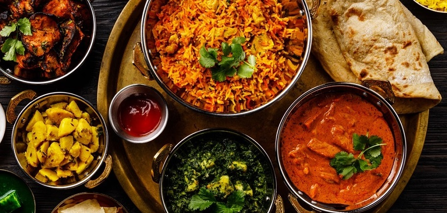

Hotels provide a variety of services to make guests' stays as comfortable and enjoyable as possible. Some of the most common services provided by hotels include accommodation, housekeeping, room service, front desk and concierge services, free Wi-Fi, business centers, fitness centers, swimming pools, spas, restaurants and bars, shuttle service, and tour arrangements. These services can vary depending on the hotel's rating, location, and target market. Overall, hotels strive to provide high-quality services to meet the needs and preferences of their guests and ensure a memorable and pleasant experience.Flight services include in-flight entertainment, food and beverage service, comfort items, lavatory facilities, in-flight Wi-Fi, and safety measures. These services aim to provide passengers with a comfortable and enjoyable travel experience while prioritizing their safety.These services vary depending on the airline and the type of flight, but they all aim to provide a high-quality experience for passengers.Food services provide a variety of services related to food and dining. Some of the most common services offered by food establishments include food preparation and cooking, delivery, catering, and table service. Food services also offer menu planning and design, as well as consultation on dietary needs and preferences. Additionally, food services can offer meal planning and preparation for events and special occasions. Overall, food services aim to provide high-quality meals and dining experiences to meet the needs and preferences of their customers.Guides provide a range of services to tourists and travelers, including guiding and escorting them during their visits to various destinations. Guides offer their expertise and knowledge to provide visitors with an enjoyable and informative experience, sharing historical, cultural, and local insights about the places they visit. Guides can also provide translation and interpretation services, as well as assist with travel arrangements and bookings. Additionally, guides can offer recommendations on local restaurants, attractions, and events to enhance visitors' experiences. Overall, guides strive to provide a personalized and enriching experience for travelers to make their visit memorable and enjoyable.